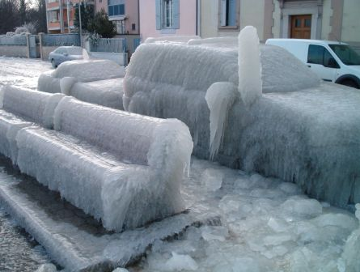

Monday, January the 31th, 2005
back to: title, date or indexes
Many years ago, on an earlier, vanished version of the Hooting Yard web pages, much attention was paid to ice. Indeed, there was an Ice Project, a collaborative venture the parameters of which were somewhat hazy. In contrast, there has been far too little ice-related material here, and I am aware that this must cause great anguish for many readers. So let me put things right. Look:

Isn't that great? This is one of a set of photographs taken in Geneva last week, and you can look at many, many more of them here.
Meanwhile, perhaps it is time to resurrect the Hooting Yard Ice Project. Don't fret about pesky distractions like Guidelines For Submissions. Just send in your ice-related material, be it observations, pictures, passages of purple prose, or bagatelles, to the Hooting Yard Ice Project Übercoördinator.